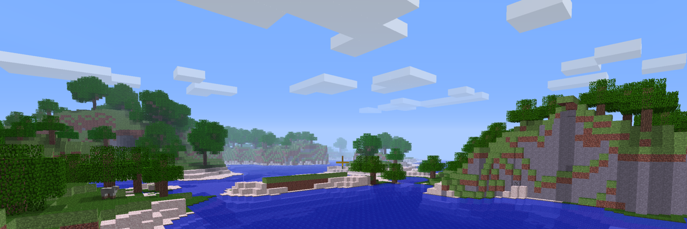

Welcome To This Here Site
Hi! If you're here you're either someone I know or a very confused passerby, well worry not! Because this site it pretty epic ( bad ), and features like one page. Essentially right now this is just a website for myself to upload things I've created ( which you can see below ), and that's about it; hope you enjoy
Wotansauge
Wotansauge is a 2D survival-exploration game where you can mine, craft, trap and starve in a dried aquifer after a horrible apocalyptic event. The game is based off of a bunch of games I play, examples are: Don't Starve, Minecraft, Terraria, Dwarf Fortress, etc. The goal? There is none, as this game is still in development and likely will be for a while without one. The game was created with MonoGame ( The quintessential XNA successor ) and is packaged with the dll if you wish to decompile the game yourself! Happy surviving!
Cosmisch a1.2.6 Texture Pack

Cosmisch is my own texture pack for Minecraft Alpha 1.2.6. It is suppose to make the world look a lot more dreamy-like, and generally just use more cooler colors. It is-- as stated before --a mostly color-mix rather than an actual texture pack, but it still looks nice I find